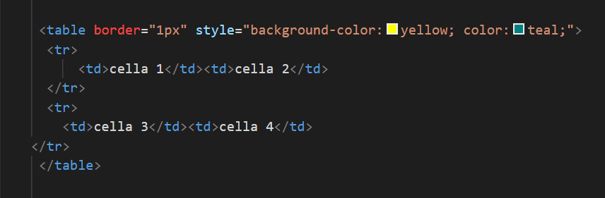
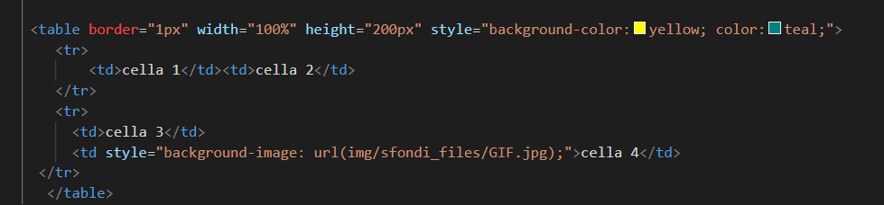
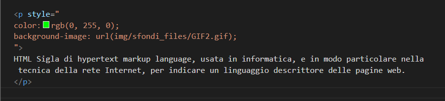

questi sfondi possono essere immagini, colori e GIF.
Proviamo a cambiare sfondo di una tabella con l'attributo background-color:yellow.

il risultato sarà il seguente.
| cella 1 | cella 2 |
| cella 3 | cella 4 |
Adesso Proviamo a impostare un'immagine come sfondo nella cella numero 4.

Il risultato sara il seguente
| cella 1 | cella 2 |
| cella 3 | cella 4 |
Adesso proviamo a impostare una GIF come sfondo in un paragrafo.

Il risultato sarà il seguente.
HTML Sigla di hypertext markup language, usata in informatica, e in modo particolare nella tecnica della rete Internet, per indicare un linguaggio descrittore delle pagine web.